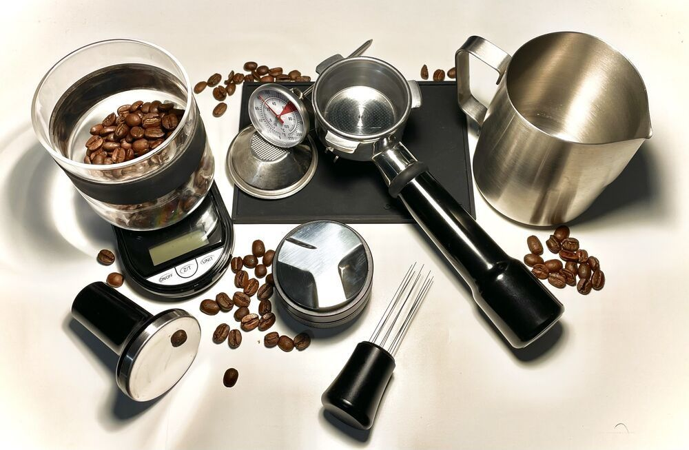
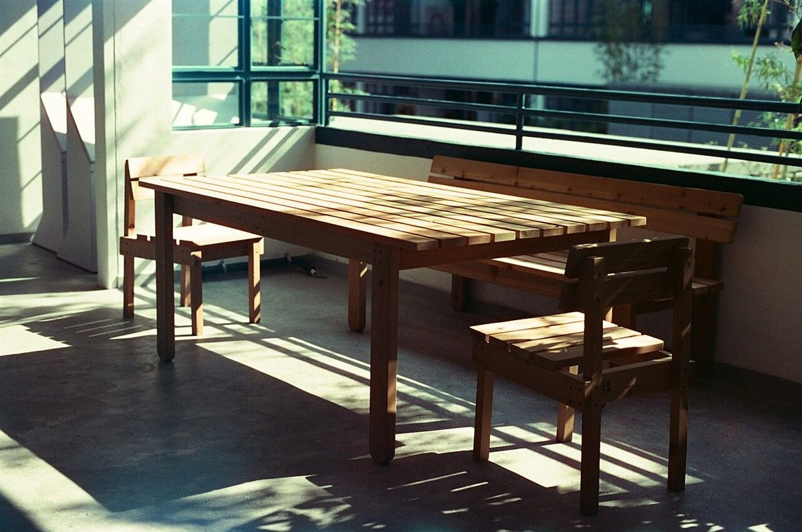

店のこと
六つの部位の配置図
お店の詳しい情報は準備中です。ここでは、制作側が考えたデザインの見かたをご紹介します。
写真(イメージ)
パンの写真(イメージ)


写真はイメージです。お店の商品を示すものではありません。
部位の説明
老眼鏡を六つに分けると
1
レンズ
枠の中におさまる透明な板。近くの文字を見やすくするための凸レンズです。
2
リム
レンズをぐるりと囲む枠。レンズを支え、顔の前で形を決める部分です。
3
ブリッジ
左右のリムをつなぐ、中央の橋。鼻の上にまたがる位置にあります。
4
ノーズパッド
鼻に触れる小さな当て。ブリッジの下で、全体を支えます。
5
ヒンジ
リムの外側の角にある蝶番。つるを折りたたむときに動きます。
6
テンプル
耳へかける、両側のつる。ヒンジから後ろへ伸びています。
制作側の連想
どうして老眼鏡なのか
お店のことが分かるまでの間、ページを「手元を見やすくする小さな道具」に見立てました。老眼鏡は、近くのものをくっきり見るためのものです。このサイトも、確認できた情報だけを近づけて見せる形にしています。制作側の連想で、お店の理念・由来とは無関係です。
写真(イメージ)
コーヒー豆と道具の写真(イメージ)


写真はイメージです。お店の設備や商品を示すものではありません。
写真(イメージ)
明るい机のイメージ

写真はイメージです。お店のものではありません。